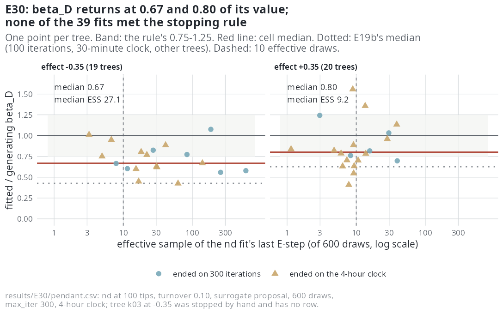

E30 — Was E19b's short pendant-age coefficient the clock or the model?
| Status | complete on 39 of 40 fits; clock-limited (27 of 39 nd fits ended on the four-hour clock, none met the stopping rule). One fit (nd-em035-k03) ran 60 hours with neither clock firing and was stopped by hand: that record of the clock defect stands. Followed by E37. Superseded by E46 for nd recovery when it reports (Estimability) |
| Package build | emphasis f30a791 |
| Driver / analysis | sim/E19-pendant.R --nd-sampling bdi --effects -0.35,0.35 with max_iter 300 and a four-hour clock; no analysis script, numbers below read from the merged CSV |
| Data | results/E30/pendant.csv (39 rows), results/E30/jobs/ (39 files), results/E30/jobs-k03-stopped.txt |
Question
No nd fit had run to its stopping rule: every one of E19 and E19b ended on its 30-minute clock, with \(\beta_D\) at 0.30-0.63 of its value on the thinning proposal and 0.43-1.06 on the surrogate. E30 gives the same design three times the iterations and eight times the clock. The number it exists for, in the design's words, is "whether the 0.43 to 0.63 recovery of E19b was the clock or the model".
Design
| Parameter | Value | Meaning |
|---|---|---|
| generator | nd, linear link |
as in E19 |
| effects | ±0.35 of \(\beta_0\) at one \(D\) scale unit | \(\beta_D = \pm0.0598\) per time unit at a \(D\) scale of 2.92 |
| tips | 100 (observed 83-112 at -0.35, 84-108 at +0.35) | capacity 97.5 (-0.35) and 107.2 (+0.35) |
| turnover / crown | 0.10 / 15 | |
| trees per cell | 20 (19 with a result at -0.35) | seeds of E19b |
| fits | dd and nd, both on the surrogate proposal |
|
| draws | 600 | |
max_iter / clock |
300 / 4 hours per fit (E19b: 100 / 30 minutes) | |
| box | sim/box.R, as E19 |
The design calls these "the same trees by seed" as E19b. They are not the same trees: the f30a791 simulator draws different trees from E19b's seeds (the same effect the E31 amendment records for ned), and the \(D\) scale read from them is 2.92 against E19b's 2.83, so \(\beta_D\) is ±0.0598 here and ±0.0619 there. E30 against E19b is a comparison of two samples of the same design, not a paired one.
Pre-set rule
E19's rule on \(\beta_D\): median ratio in \([0.75, 1.25]\), the right sign on \(\ge 80\%\), nd over dd by more than 2 AIC on \(\ge 80\%\), cells below 10 effective draws reported and excluded. Also reported: the share of nd fits that met the stopping rule, and the extinction slope \(\gamma_D\) against its generating zero.
Results
| effect | trees | ratio (q1-q3) | sign | ESS (min-max) | < 10 | nd stops cap / clock |
nd over dd by > 2 (median \(\Delta\)AIC) |
\(\hat\gamma_D\) median | dd stops |
|---|---|---|---|---|---|---|---|---|---|
| -0.35 | 19 | 0.67 (0.60-0.81) | 19 / 19 | 27.1 (3.2-595) | 4 | 7 / 12 | 19 / 19 (22.0) | -0.0005 | 19 converged |
| +0.35 | 20 | 0.80 (0.70-0.98) | 20 / 20 | 9.2 (1.1-39) | 12 | 5 / 15 | 20 / 20 (19.3) | +0.0116 | 20 converged |
ESS: effective sample of the nd fit's last E-step, of 600. No nd fit met the stopping rule: 12 of 39 ended on the 300-iteration cap and 27 on the four-hour clock (the README row says "the rest ended on the clock"; the file has 12 on the cap). The +0.35 cell is sampler-limited (median ESS 9.2, 12 fits below 10); both cells are clock-limited. On the fits with at least 10 effective draws the median ratio is 0.63 (15 fits) at -0.35 and 0.89 (8 fits) at +0.35. Fits stopped by the cap and by the clock give similar ratios (0.67 and 0.71 at -0.35; 0.82 and 0.79 at +0.35). The extinction intercept \(\gamma_0\) is fitted at exactly 0 on 14 of 19 fits at -0.35 and 8 of 20 at +0.35.
The fit that would not stop. Tree 3 of the -0.35 cell ran 60 hours on one fit while the other seven workers sat idle for the last day; neither its dd nor its nd max_time of four hours fired, so the time check does not reach wherever the fit was looping. It was killed by hand and recorded in jobs-k03-stopped.txt ("stopped by hand 2026-10-08 after 60 h on one fit, no result"). That is a package defect (a fit its budget cannot stop), separate from the model; the description comes from the session record cited in ledger A §7.3.

nd fit's effective sample, shape and colour by how the fit ended. The cell medians (red) sit at 0.67 and 0.80, above E19b's 0.43 and 0.63 (dotted, other trees); at +0.35 most fits are left of the 10-draw line, and the points spread from 0.42 to 1.56.Conclusion
Not met. At -0.35 the sign (19 of 19) and selection (19 of 19) halves are met and the ratio, 0.67, is outside \([0.75, 1.25]\). The +0.35 cell is sampler-limited and excluded by the rule; its ratio 0.80 and its selection 20 of 20 are reported only. 0 of 39 nd fits met the stopping rule. \(\gamma_D\) stays near its generating zero at -0.35 (-0.0005) and is fitted at +0.0116 at +0.35, a fifth of the size of \(\beta_D\).
With three times the iterations and eight times the clock the median ratio is 0.24 and 0.17 higher than E19b's on a sample of the same design, but no fit reached its stopping rule, so the question E30 was registered for (the clock or the model) is not answered by it. That led to E37: the same trees, 1000 iterations and a 60-hour clock. What E30 does show is that the coefficient's sign and nd's lead over dd are present on every tree at this effect, on fits that had not finished.
The fits maximised the earlier D likelihood. Emphasis 4e0b9dd changed the D likelihood; before it the likelihood held the clade mean pendant age at its segment-end value, so \(D\) grew within a segment while the simulator held it constant; from it \(D\) is constant between events in both. On complete trees E44 measured d's \(\beta_D\) at 0.70 and 1.46 of its value under the earlier likelihood and 0.95 and 1.16 under the current one (nd at -0.35: 0.77 and 1.01). The ratio of 0.67 is that of the earlier likelihood on unfinished fits; E46 measures nd recovery under the corrected one.
Related
- E19 — E19 and E19b, the 30-minute runs whose shortfall E30 asks about.
- E31 —
ndat 200 tips inside the ladder with 300 iterations: 0 of 20 finished (E31), 1 of 20 (E31b). - E37 — E30's trees with 1000 iterations and a 60-hour clock.
- E29 — the
nedcounterpart at 200 tips, where 7 of 20 fits finished and the coefficient on them was 1.02.